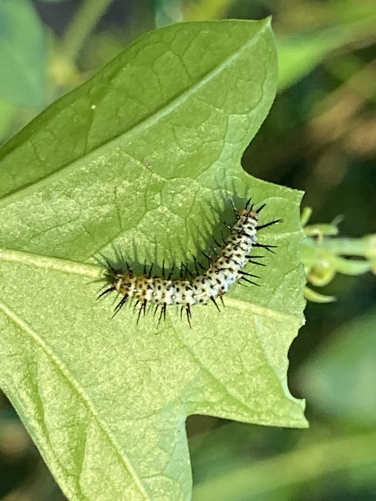

- The zebra longwing is Florida's official state butterfly, named in 1996 — long, narrow wings boldly striped in black and pale yellow.
- It is one of the very few butterflies that eats pollen as well as nectar, and that extra protein lets it live for months rather than the usual few weeks.
- Its caterpillars feed only on passionflower vines, taking in the plant's natural toxins so that the adult is distasteful to predators — the bold stripes are a warning.
- At dusk, zebra longwings gather to sleep together, returning to the same communal roost night after night, sometimes dozens of butterflies in one spot.
Long and narrow, black with pale-yellow stripes.
Slow, graceful, and floating, usually in shade.
Medium-large, with that distinctive elongated wing shape.
Silent. (Curiously, the chrysalis can make a faint rasping sound if disturbed.)
A black butterfly with thin yellow stripes drifting slowly through a shady garden or wood edge. The long, narrow wings and unhurried, floating flight are unmistakable. At dusk, look for several roosting together.
Caterpillars eat only passionflower (Passiflora) leaves. Adults take both nectar and pollen — the pollen-feeding is what gives them their unusually long lives.
Drifting slowly through shaded plantings and wood edges, especially near passionflower vines. At dusk, check sheltered spots for small groups roosting together.
Year-round resident through much of central and southern Florida, active in every month in warm areas.
Just watch and enjoy, and avoid handling the delicate wings. Planting native passionflower vine is the single best way to support them.
- © Pammy63 (CC-BY-NC), via iNaturalist